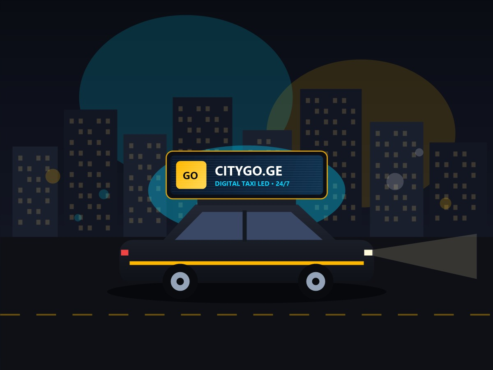
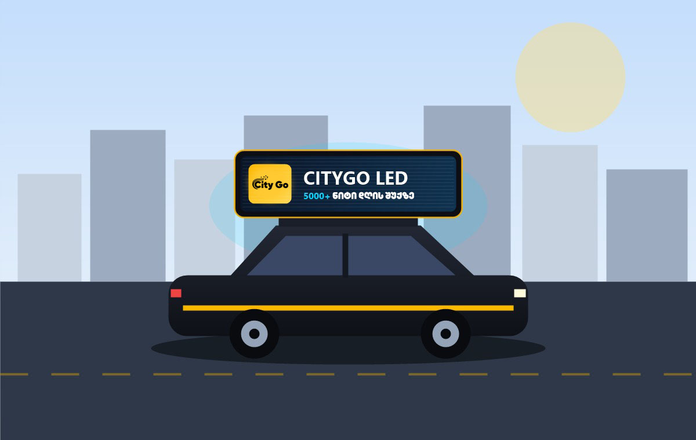
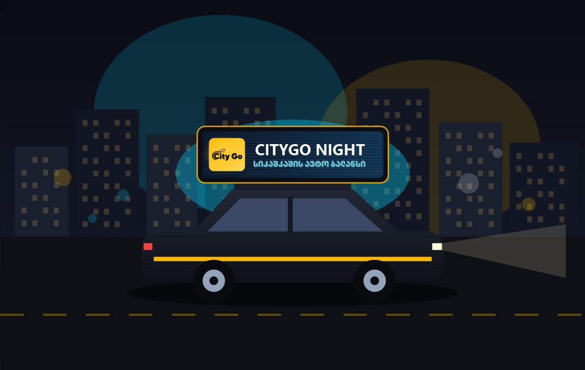
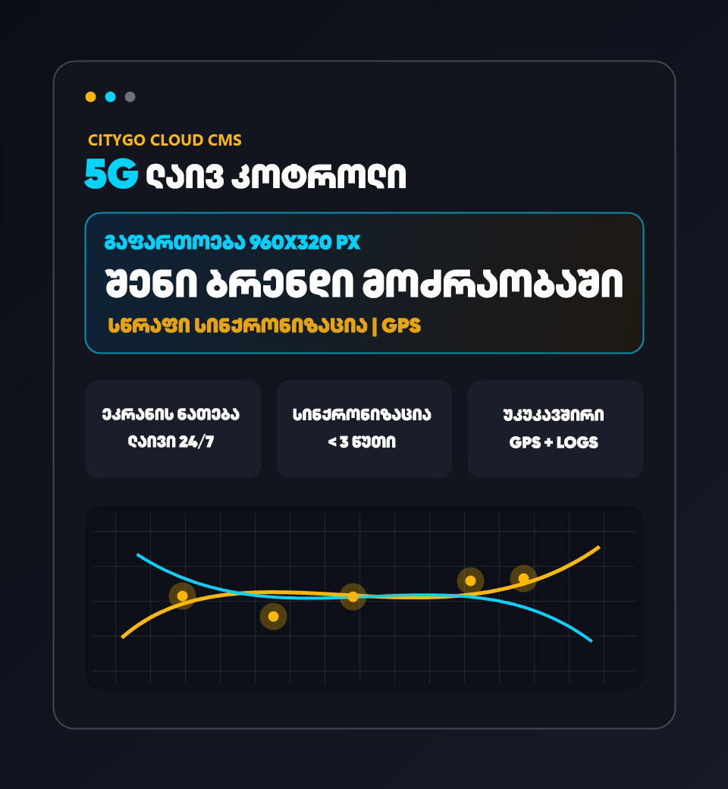
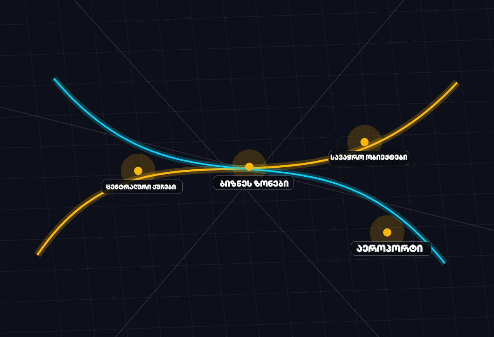
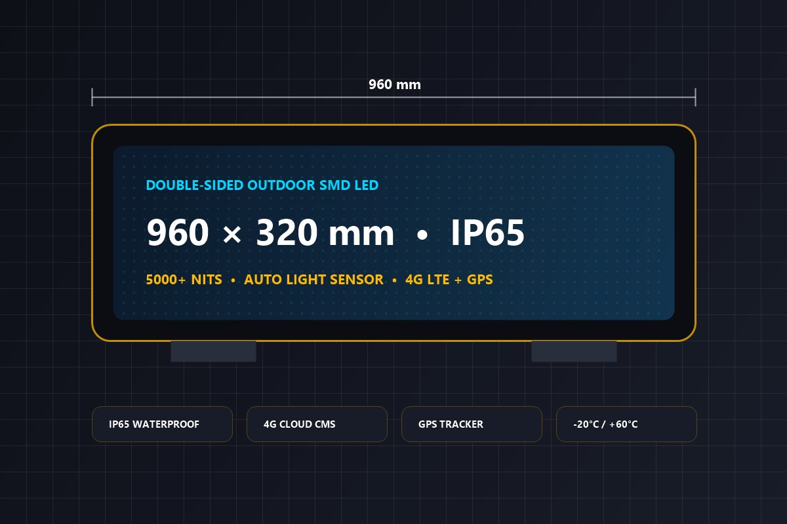

მაღალი ვიზუალური ეფექტი
მოძრავი, განათებული ციფრული გამოსახულება ბუნებრივად იპყრობს ყურადღებას ქუჩის ხმაურსა და პიკის საათების საცობებში.
CityGo თქვენი ბრენდი მოძრავია და მუდმივად ჩანს ცენტრალურ გამზირებზე, ბიზნეს უბნებსა და ყველაზე ხალხმრავალ ქუჩებში — დღისითაც და ღამითაც.

სტატიკური ბილბორდებისგან განსხვავებით, მოძრავი ციფრული LED ეკრანი იპყრობს ყურადღებას და ყოველდღიურად ათასობით ქვეითსა და მძღოლს ხვდება ქალაქის ყველა მთავარ ქუჩაზე.
მოძრავი, განათებული ციფრული გამოსახულება ბუნებრივად იპყრობს ყურადღებას ქუჩის ხმაურსა და პიკის საათების საცობებში.
ჩაშენებული სინათლის სენსორი ავტომატურად აბალანსებს სიკაშკაშეს — მკვეთრი ფერები მზიან დღეს და სასიამოვნო ნათება ღამით.
არ სჭირდება ბეჭდვა და მონტაჟი. ღრუბლოვანი სისტემით შესაძლებელია რეკლამის განახლება რამდენიმე წუთში.
მართეთ რეკლამა ჩვენება უბნებისა და საათების მიხედვით — დილით ბიზნეს ზონებში, საღამოს კი გასართობ და სავაჭრო ზონებში.
თითოეულ ტაქსზე დამონტაჟებულია ორმხრივი LED პანელი, რაც ქუჩის ორივე ტროტუარიდან და საპირისპირო ზოლიდან უზრუნველყოფს ხილვადობას.
კამპანიის მიმდინარეობისა და დასრულებისას იღებთ დეტალურ ანგარიშს: გავლილი მარშრუტები, აქტიური საათები და ჩვენებების სტატისტიკა.

დღის რეჟიმი • 5000+ ნიტიმაღალი სიკაშკაშის SMD LED დიოდები და ანტირეფლექსური დამცავი ფენა უზრუნველყოფს, რომ თქვენი რეკლამა ხილვადი იყოს ნებისმიერი ამინდის მიუხედავად.

ღამის რეჟიმი • ავტო-დაბალანსებამზის ჩასვლისთანავე ეკრანი ავტომატურად გადადის ოპტიმალურ ღამის სიკაშკაშეზე — კაშკაშა, სუფთა და თვალისთვის კომფორტული ეფექტით.
მთლიან ტექნიკურ პროცესს ჩვენ ვმართავთ — თქვენ მხოლოდ გვიზიარებთ მიზანს და შეტყობინებას, რომლის მიტანაც გსურთ ქალაქამდე.
განვსაზღვრავთ კამპანიის ხანგრძლივობას, ჩვენებების სიხშირეს, ავტომობილების რაოდენობასა და სასურველ ზონებს.
გვაწვდით მზა ბანერს ან მოკლე ანიმაციას — საჭიროების შემთხვევაში, ჩვენი გუნდი დაგეხმარებათ, მასალების მომზადებასა და მის ეკრანის ფორმატზე მორგებაში.
ვიზუალი 5G ღრუბლოვანი პლატფორმიდან მყისიერად იტვირთება აქტიური ტაქსების LED ეკრანებზე და იწყებს ჩვენებას.
კამპანიის დასრულებისას გადმოგცემთ სრულ ანგარიშს აქტივობის, მარშრუტებისა და ჩვენებების რაოდენობის შესახებ.

ბრიფიდან ქალაქის ქუჩებში პირველ ჩვენებამდე — ზედმეტი ბიუროკრატიისა და ბეჭდვის გარეშე.

ჩვენი პარტნიორი ავტომობილები ყოველდღიურად გადაადგილდებიან ქალაქის მთავარ ქუჩებში — იქ, სადაც რეკლამის კონტაქტის ღირებულება ყველაზე ეფექტურია.
მოქნილი ფორმატი ნებისმიერი ზომის კამპანიისთვის — ბრენდის ცნობადობიდან ნამდვილ მომხმარებლებამდე.
ახალი საცხოვრებელი კომპლექსებისა და სპეციალური შეთავაზებების წარმოჩენა მიზნობრივ უბნებში.
ფასდაკლებების, ახალი კოლექციების და ფილიალების გახსნის სწრაფი კომუნიკაცია.
ლანჩისა და საღამოს შეთავაზებების ჩვენება ზუსტად აქტიურ საათებში.
ციფრული პროდუქტების, აპლიკაციებისა და სერვისების მუდმივი ცნობადობა ქალაქში.
ივენთების, ფესტივალებისა და პრემიერების დინამიკური ანონსირება.
ლოკალური და საქალაქო აუდიტორიის მოზიდვა მკაფიო მოწოდებით (CTA).
ჩვენი ეკრანები შექმნილია გარე გამოყენებისთვის — უძლებს წვიმას, თოვლს, სიცხეს, ვიბრაციას და ინარჩუნებს სუფთა, მკვეთრ გამოსახულებას.

მზა ვიზუალის არსებობის შემთხვევაში, კამპანიის გაშვება შესაძლებელია იმავე ან მომდევნო სამუშაო დღეს. ყველა ეკრანი იმართება დისტანციურად, ღრუბლოვანი სისტემით.
დიახ, ეს ციფრული LED რეკლამის ერთ-ერთი მთავარი უპირატესობაა. კამპანიის მიმდინარეობისას შეგიძლიათ განაახლოთ ტექსტი, ფასდაკლება ან ვიზუალი ბეჭდვის დამატებითი ხარჯის გარეშე.
დიახ. ეკრანებს აქვს IP65 დაცვის სტანდარტი, რაც სრულად იცავს წყლისა და მტვრისგან, ხოლო 5000+ ნიტამდე სიკაშკაშე მზიან დღეებშიც მკაფიო გამოსახულებას უზრუნველყოფს.
ყველა ეკრანი აღჭურვილია GPS ტრეკერითა და ჩვენებების აღრიცხვის სისტემით. დამკვეთს გადაეცემა ფოტო/ვიდეო დადასტურება და შემაჯამებელი ანგარიში.
მოგვწერეთ თქვენი კომპანიის ან პარტნიორობის შესახებ — ჩვენი გუნდი მოგიმზადებთ პერსონალურ შეთავაზებასა და მედიაგეგმას.